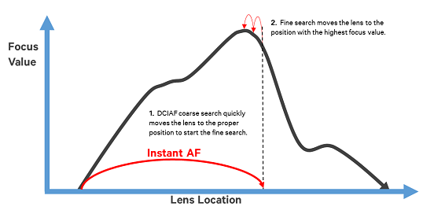

In the search phase of autofocus, the algorithms use various methods to determine the best lens position to achieve focus and to trigger the actuator to move the lens to that position. The search phase is divided into a coarse search and a fine search.
The goal of the coarse search is to move the lens towards the near limit of fine search. The following figure illustrates the basic operation of the coarse search and the fine search in the DCIAF algorithm. The coarse search quickly moves the lens to the proper position to start the fine search. The fine search then moves the lens to the position with the highest focus value. The boundaries, thresholds, steps sizes, and limits for the coarse search and the fine search are configurable. The search parameters can be tuned to balance speed and accuracy or with an emphasis on either speed or accuracy.
NOTE: The coarse search is sometimes referred to as focus converge.

Each algorithm uses a different method calculate the lens positions for the searches. See Contrast AF (CAF), phase detection AF (PDAF), time-of-flight (TOF) AF, and dual camera instant AF (DCIAF) for more information on each algorithm.